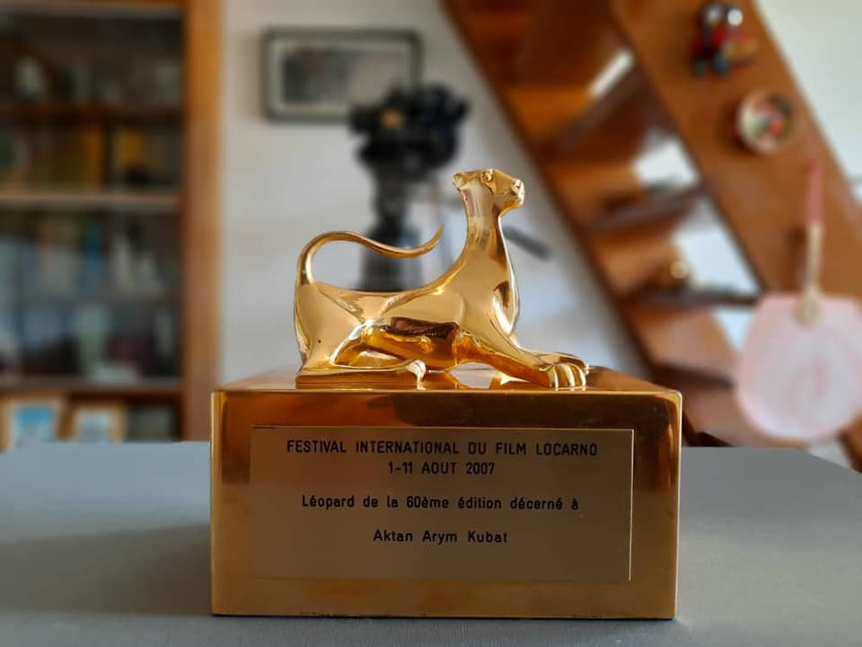

{% extends 'main/base.html' %}
{% block title %}
about
{% endblock %}
{% block content %}

Золотой леопард
"2007 год, пригласили на 60-ый юбилейный кинофестиваль в Локарно. И в канун вылета, вдруг Мирлан заявляет: "Я женюсь..."
"Здорово", - обрадовался я и спросил. - "На ком?"
"На Алтынай Койчумановой" - ответил он.
Мне действительно стало хорошо, но больше всего торжествовала Айчурек, которая все время грезила увидеть её как сноху. Мирлан продолжил: "Я был у них дома, родители согласны... Пап, но Алтынай просит Вас в завтрашней поездке не говорить с ней об этом... Она стесняется". И тут возбужденная Айчурек не удержалась: "Значит, ты был у них дома, все обсудили, да, а мы, как ненормальные, обязаны молчать?" Дай волю, она была готова ехать со мной в аэропорт, ей нетерпелось поговорить с будущей невесткой.
Должны были лететь в Локарно вместе с Алтынай и встретились утром на регистрации авиабилетов, видимо её привёз папа, а меня подвез Мирлан. Совсем неожиданно, я стал волноваться, не знал, как вести себя в данной ситуации. С Алтынай со дня основания "Ой Арт" тесно сотрудничали и могли решать вопросы любой сложности, причём наши отношения были искренние и доверительные, а тут странно впал в растерянность.
Молча прилетели в Москву, от неугомоной Айчурек пришло сообщение: "Ну что, поговорил?" Я ответил: "Нет". И полетели дальше в Цюрих, как немые. Когда сели в поезд, догнало напористое сообщение той же Лунной Красавицы, видимо, написала после "московских молчаний": "Актан, ты что ненормальный? Мылжыйбай, обязательно поговори с Алтынай, иначе можешь оставаться в Швейцарии". Про "оставаться в Швейцарии", видимо, перегнула, но меня сразу осенило, так бывает на съёмках, когда не знаешь, как снимать и небеса (не Айчурек) дарят тебе идею. "Алтынай, Швейцария - нейтральная страна..." - меня уже распирало. - "Все жизненно важные переговоры ведутся на нейтральной земле..." Она засмеялась и мы дальше в пути до самого Локарно говорили о жизни.
На фестивале мне вручали "Золотого Леопарда", спросил за что, она перевела: "За то, что Вы есть". Этот приз один из самых памятных и дорогих, ибо Алтынай осенью того года, как невестка вошла в наш дом и хочется сказать ей: "Спасибо за то, что ты есть..."
{% endblock %}